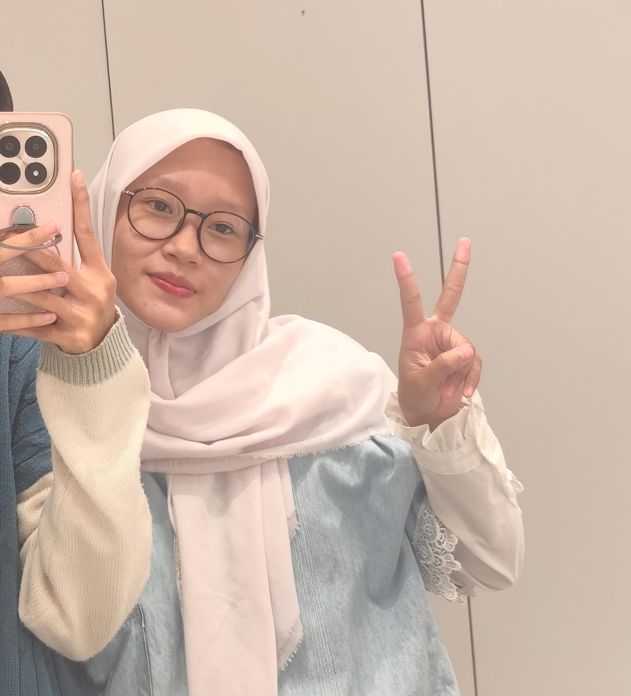
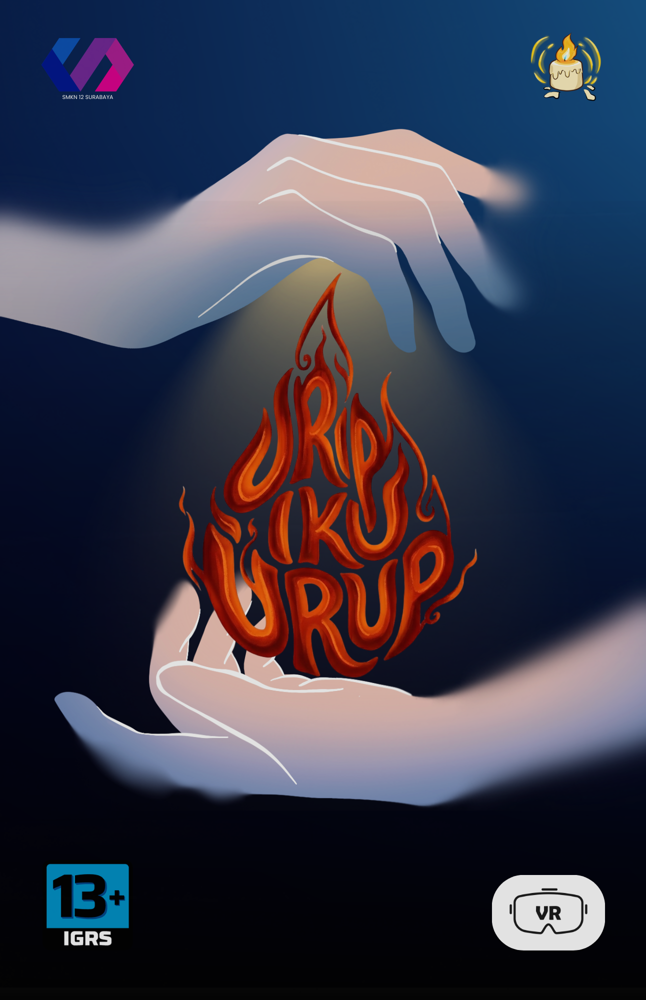
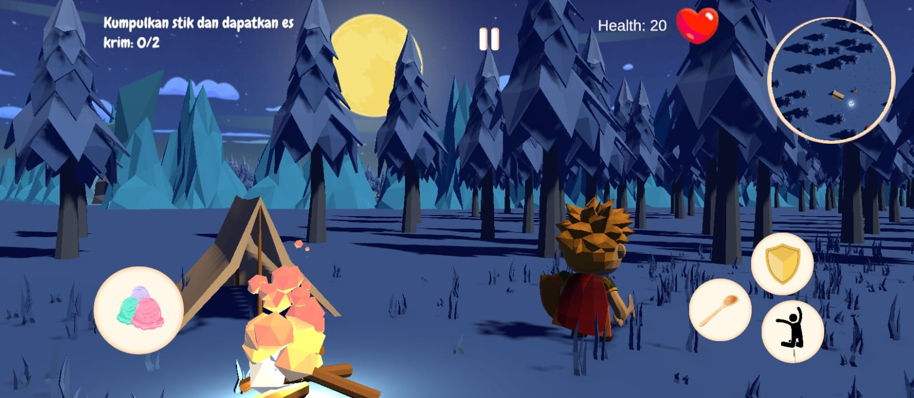

GAME DESIGN & GAME ART


Reisyah Nayla Haniye
Perancang game dan pencerita yang fokus pada narasi, arahan kreatif, dan pembangunan dunia game.

Urip iku Urup
Game VR horor nusantara, dimana kamu harus tetap menjaga nyala apimu
Lihat portofolio →

One Sweet Reason
Game petualangan 3D third-person yang menyentuh hati tentang seorang individu yang merasa lelah dan kewalahan dengan tekanan kehidupan sehari-hari. Di tengah rasa putus asa, ia menemukan satu sumber kebahagiaan dan motivasi sederhana: es krim.
Lihat portofolio →
SWIRMM the Age of Fishes
Game 2.5D seekor ikan purba kecil yang bertahan hidup di laut Paleozoikum
Lihat portofolio →